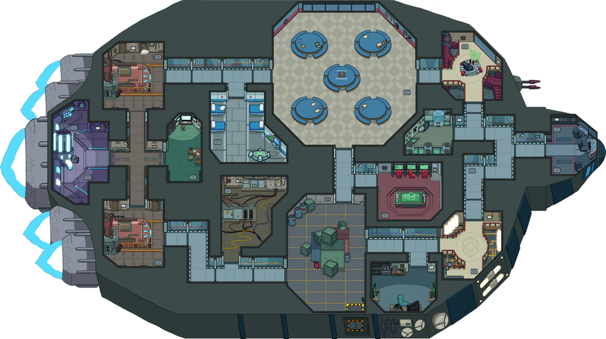
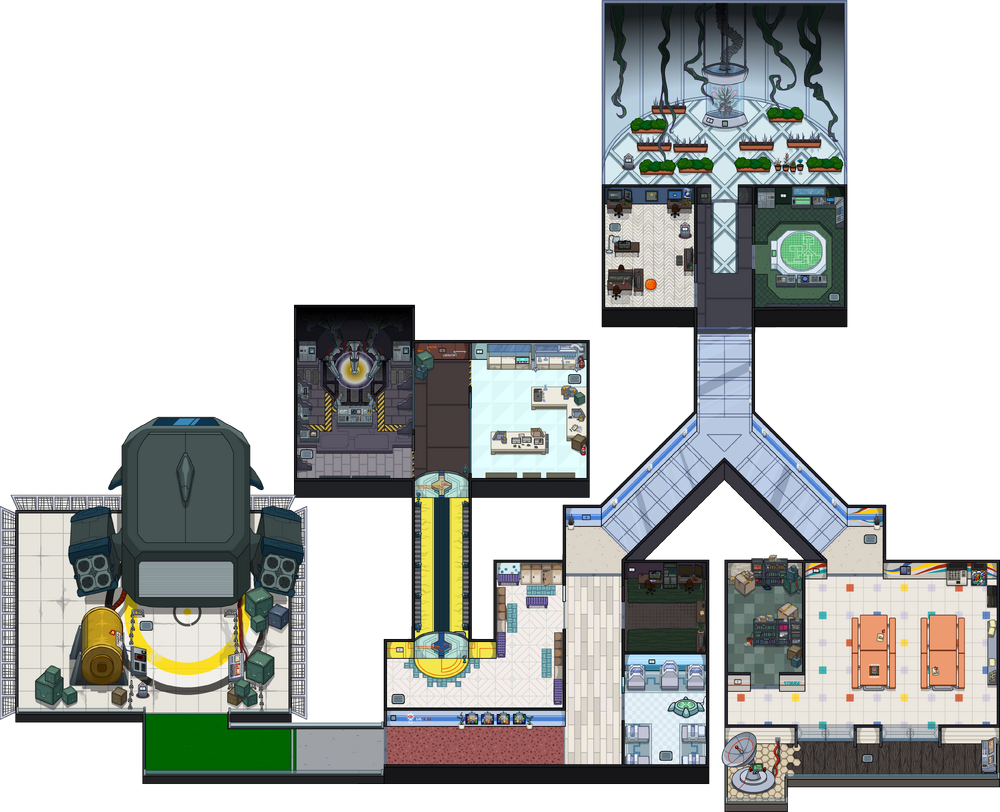
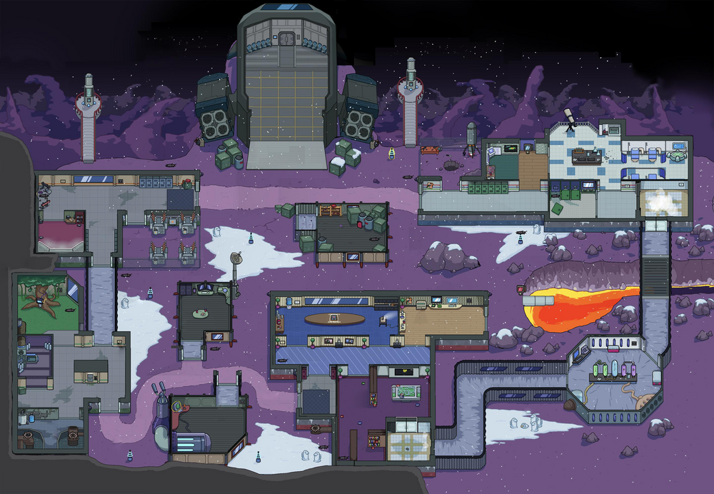
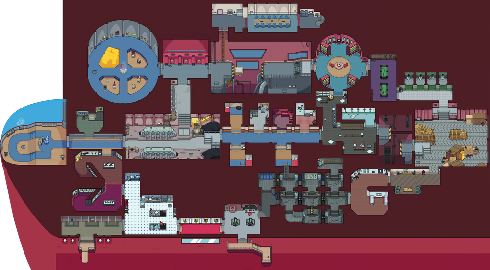
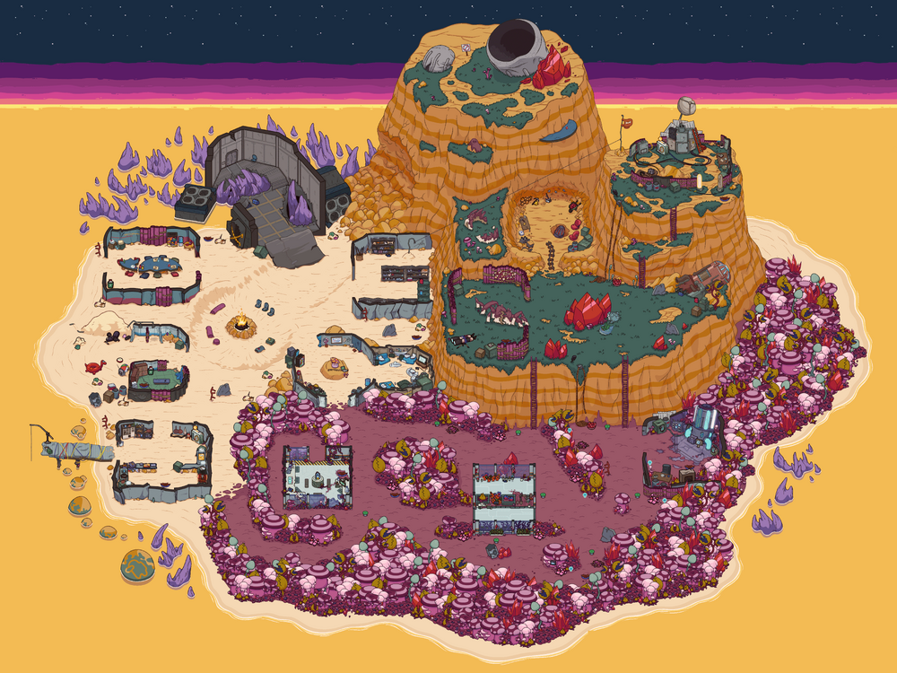

The Skeld was the first map added to Among Us, which came with the game's release on June 15, 2018. The map is the second smallest in the game, in terms of area accessible. It houses 14 locations and 17 tasks.
MIRA HQ was the second map added to Among Us, which was released on August 8, 2019.[1] The map was originally paid content, bought along with the MIRA HQ skin bundle, but was later made available to all players for free. It is the smallest map in the game, in terms of area accessible, houses 14 locations and 19 tasks.
Polus was the third map added to Among Us, which was released on November 12, 2019.[2] The map was originally paid content, bought along with the Polus skin bundle, but was later made available to all players for free. It is the largest map in the game, in terms of area accessible, houses 15 locations and 24 tasks.
The Airship was the fourth map added to Among Us, which was released on March 31, 2021.[3] The map is the second largest map in the game, in terms of area accessible. It introduced moving platforms and ladders to the game, houses 21 locations and 23 tasks.
The Fungle is the fifth map added to Among Us, which released on October 24, 2023.[4] The map is the third largest map in the game, in terms of area accessible. It introduced ziplines to the game, houses 18 locations and 25 tasks.
